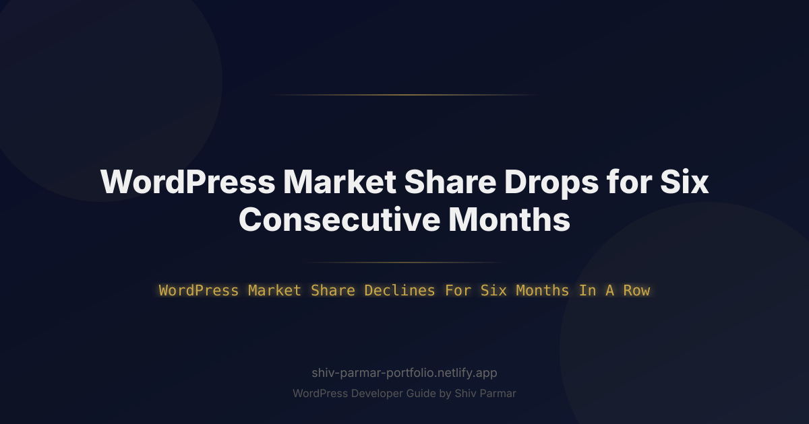

WordPress Market Share Drops for Six Consecutive Months
Table of Contents
For over two decades, WordPress has stood as the undisputed monarch of the World Wide Web. Powering over 40% of all websites globally, its open-source framework, low barrier to entry, and rich plugin ecosystem made it the default operating system for content publishing. However, digital shifts in recent months reveal an unprecedented trend: quantitative web telemetry shows that WordPress market share declines for six consecutive months in a row. This continuous multi-month contraction marks a historic turning point in content management system (CMS) adoption and web development trends.
As enterprise web engineering teams, agency leads, and digital marketers watch these metrics closely, the decline highlights broader shifts in consumer expectations, developer experience (DX), performance demands, and the rapid rise of competitive web platforms. While WordPress remains the single largest CMS on the market, the sustained micro-drops signal a structural evolution in how modern websites are designed, deployed, and scaled.
Whether you manage a high-traffic e-commerce portal, run an enterprise content strategy, or maintain client portfolios, understanding why WordPress market share is shifting—and how to adapt your web strategy—is essential for staying competitive in today's digital landscape. This comprehensive guide breaks down the data behind the trend, explores the key drivers behind the decline, and outlines a step-by-step roadmap to build performant, future-proof web platforms.
What is the WordPress Market Share Decline?
The term WordPress market share refers to the percentage of all active websites indexed across the internet that utilize the WordPress platform as their primary core management framework, as tracked by global telemetry standard engines like W3Techs and BuiltWith. Historically, WordPress enjoyed unbroken annual growth, expanding from an estimated 13% of top websites in 2011 to a peak reaching over 43.3% of all active websites worldwide.
However, recent quarterly data confirms a rare phenomenon: WordPress market share declines for six consecutive months in a row. The platform's overall market penetration among tracked content platforms has retreated by incremental yet consistent percentage points each month. While a single month-over-month flux might be dismissed as statistical variance, six straight months of continuous contraction indicate a persistent long-term market rebalancing.
| Platform Category | Historical Market Share (Peak) | Current Trajectory | Primary Drivers of Adoption Shift |
|---|---|---|---|
| Monolithic Open-Source (WordPress) | 43.3% | Declining (-0.1% to -0.3%/mo) | Plugin bloat, security management, maintenance overhead |
| SaaS Page Builders (Shopify, Wix, Squarespace) | 9.5% | Rapidly Growing | Zero maintenance, integrated hosting, streamlined UX |
| Headless / Jamstack (Next.js, Astro, Webflow) | 3.2% | Accelerated Growth | Sub-second site speed, developer preference, security |
| Custom / Enterprise Frameworks | 12.0% | Steady Growth | AI-first pipelines, edge rendering, microservices |
This trend does not imply that WordPress is facing an existential collapse overnight; millions of active sites continue to rely on it. Instead, the metric signals a market fragmentation. High-growth e-commerce brands are consolidating around turnkey platforms like Shopify, design-driven small businesses are migrating toward Webflow and Wix, and enterprise engineering organizations are shifting toward decoupled, headless architectures powered by Next.js, Nuxt, and modern headless CMS engines.
Why WordPress Market Share Matters in 2026
The continuous decline in WordPress market share is not merely an academic data point for developers; it reflects critical macroeconomic and engineering shifts in the digital ecosystem. Understanding these forces helps organizations evaluate whether their current tech stacks remain asset-aligned or carry accumulating technical debt.
1. Extreme Demand for Core Web Vitals Optimization
Modern search engines prioritize user experience metrics—specifically LCP (Largest Contentful Paint), INP (Interaction to Next Paint), and CLS (Cumulative Layout Shift). Monolithic WordPress environments, heavily burdened by stacked third-party plugins, render render-blocking JavaScript and unoptimized CSS by default. As Google and AI-driven search models raise site performance standards, organizations are seeking lean content stacks that deliver static or edge-rendered pages naturally.
2. The Evolution of Developer Experience (DX)
Software engineering talent increasingly gravitates toward modern JavaScript/TypeScript ecosystems, component-driven design systems (React, Vue, Svelte), and automated Git-driven deployments (Vercel, Netlify, Cloudflare Workers). Traditional PHP-based theme development and MySQL database maintenance are increasingly viewed as legacy infrastructure by modern engineering teams, creating a talent gap in legacy maintenance.
3. Security and Supply Chain Risks
Because of its immense popularity, WordPress remains the primary attack surface for automated exploit bots. Over 90% of vulnerability exploits in the ecosystem stem from third-party plugins and unpatched themes. Managing ongoing security patches, firewall configurations, and database sanitization incurs continuous operational costs, driving decision-makers toward hosted SaaS or immutable static architectures.
4. Governance Concerns and Ecosystem Friction
Public friction within open-source governance and commercial ecosystem disputes has generated hesitation among mid-market and enterprise stakeholders. Organizations seeking long-term operational predictability are increasingly diversifying their digital assets to eliminate single-ecosystem dependencies.
Step-by-Step Guide: Modernizing Your CMS Infrastructure
As WordPress market share declines for six months in a row, forward-thinking tech leads must ensure their web infrastructure remains fast, secure, and easily scalable. Below is an actionable technical roadmap to audit, optimize, or decouple your WordPress deployment.
Step 1: Conduct a Comprehensive Performance & Plugin Audit
Before making radical architectural changes, evaluate your existing site health to pinpoint operational bottlenecks. Profile your server execution time and identify unnecessary database queries generated by active plugins.
Run the following command-line inspection using the WP-CLI to identify low-performing active plugins and check update status across your installation:
# Check active plugins and their update status
wp plugin list --status=active --fields=name,status,update,version
# Profile database queries and execution bottlenecks via WP-CLI
wp profile stage --all --spotlightEliminate any plugin that can be replaced by light custom functions or server-level rewrites. Aim to keep active plugins under 12 single-purpose scripts.
Step 2: Decouple WordPress via REST API / GraphQL (Headless Setup)
If your content authors prefer the familiar WP admin editing interface, but your front-end requires lightning-fast load times, transition to a modern headless WordPress architecture. Under this approach, WordPress serves strictly as an admin content repository while a Node.js or React frontend handles public page rendering.
To optimize the default WordPress REST API response and strip unnecessary metadata overhead, add the following PHP snippet to your custom functionality plugin or `functions.php` file:
<?php
/**
* Optimize REST API responses by trimming non-essential user metadata
* and reducing payload size for headless frontend consumers.
*/
add_filter('rest_prepare_post', 'optimize_headless_rest_payload', 10, 3);
function optimize_headless_rest_payload($response, $post, $request) {
// Retain core attributes required for static site generators
$data = $response->get_data();
unset($data['meta']);
unset($data['_links']);
unset($data['ping_status']);
unset($data['comment_status']);
// Inject clean custom payload
$data['formatted_date'] = get_the_date('c', $post->ID);
$response->set_data($data);
return $response;
}
?>Step 3: Build a Performant Static Frontend Using Next.js
With your backend API optimized, build an decoupled frontend using React / Next.js. This guarantees sub-second global page loads by serving content from an edge CDN, eliminating direct traffic spikes to your database server.
Below is a production-ready Next.js App Router page (`app/blog/[slug]/page.js`) fetching decoupled WordPress data at build time with Incremental Static Regeneration (ISR):
// Next.js App Router: Dynamic static page generation with ISR
import { notFound } from 'next/navigation';
export async function generateStaticParams() {
const res = await fetch('https://api.yourdomain.com/wp-json/wp/v2/posts?per_page=100');
const posts = await res.json();
return posts.map((post) => ({
slug: post.slug,
}));
}
async function getPostData(slug) {
const res = await fetch(`https://api.yourdomain.com/wp-json/wp/v2/posts?slug=${slug}`, {
next: { revalidate: 3600 } // Revalidate static cache every hour
});
const posts = await res.json();
if (!posts || posts.length === 0) return null;
return posts[0];
}
export default async function BlogPost({ params }) {
const post = await getPostData(params.slug);
if (!post) {
notFound();
}
return (
<article className="max-w-4xl mx-auto py-12 px-4">
<h1 className="text-4xl font-bold mb-4">{post.title.rendered}</h1>
<div
className="prose prose-lg"
dangerouslySetInnerHTML={{ __html: post.content.rendered }}
/>
</article>
);
}Step 4: Implement Serverless Edge Caching
If fully decoupling is not feasible and your organization relies on a traditional monolithic WordPress configuration, push caching to the edge. Utilize Cloudflare Workers or Nginx caching directives to handle requests before they touch PHP processing layers.
Here is an optimized Nginx fastcgi cache configuration block tailored for monolithic WordPress instances:
# Nginx FastCGI Caching configuration block for WordPress
fastcgi_cache_path /var/run/nginx-cache levels=1:2 keys_zone=WORDPRESS:100m inactive=60m;
fastcgi_cache_key "$scheme$request_method$host$request_uri";
server {
listen 443 ssl http2;
server_name example.com;
set $skip_cache 0;
# Skip cache for POST requests and logged-in users / sessions
if ($request_method = POST) {
set $skip_cache 1;
}
if ($query_string != "") {
set $skip_cache 1;
}
if ($http_cookie ~* "comment_author|wordpress_logged_in|wp-postpass_") {
set $skip_cache 1;
}
location ~ \.php$ {
try_files $uri =404;
fastcgi_split_path_info ^(.+\.php)(/.+)$;
fastcgi_pass unix:/var/run/php/php8.3-fpm.sock;
fastcgi_index index.php;
include fastcgi_params;
# Apply cache rules
fastcgi_cache WORDPRESS;
fastcgi_cache_bypass $skip_cache;
fastcgi_no_cache $skip_cache;
fastcgi_cache_valid 200 301 302 60m;
add_header X-Cache-Status $upstream_cache_status;
}
}Step 5: Establish Continuous Integration & Automated Regression Testing
Ensure that any shift in software architecture or dependency update does not impact core web vitals, break responsive layouts, or introduce security vulnerabilities. Integrate automated Lighthouse score reporting directly into your GitHub Actions workflow:
# .github/workflows/lighthouse-audit.yml
name: Web Vitals Audit Pipeline
on: [push]
jobs:
lighthouse:
runs-on: ubuntu-latest
steps:
- name: Checkout Code
uses: actions/checkout@v4
- name: Audit URL via Treo Lighthouse Action
uses: foo-software/lighthouse-check-action@v2.0.1
with:
urls: 'https://example.com'
gitHubToken: ${{ secrets.GITHUB_TOKEN }}
locale: 'en-US'Best Practices for Modern Content Architecture
Adapting to an evolving ecosystem requires moving beyond outdated web management habits. Regardless of whether you stay on WordPress or transition to alternative platforms, follow these enterprise web development principles:
- Adopt an API-First Content Model: Ensure your core content data is stored in structured, clean JSON structures. Avoid embedding structural styling tags into raw content inputs, allowing you to re-skin or distribute content across mobile apps, syndication feeds, and web frontends effortlessly.
- Enforce Strict Dependency Budgets: Every installed plugin, npm module, or third-party tracking tag reduces application resilience. Set strict asset budgets—aiming for under 100KB of initial render-blocking JavaScript.
- Implement Edge-First Security Strategies: Shift your security perimeters away from application plugins (like Wordfence or iThemes) and move them to network edge providers like Cloudflare, Fastly, or AWS CloudFront. Catch malicious bot traffic before it reaches your primary web server.
- Prioritize Accessibility (a11y) and Semantic HTML: As AI search bots evaluate web pages, structured semantic markup (`<article>`, `<section>`, `<header>`, semantic heading hierarchies) directly impacts your content discovery visibility.
- Decouple Media Storage: Never store user-uploaded asset libraries on your primary hosting application server. Offload media uploads directly to object storage buckets (such as Amazon S3, Cloudflare R2, or DigitalOcean Spaces) routed through a global image optimization CDN.
Common Mistakes to Avoid
Navigating technology migrations during market shifts requires caution. Avoid these common traps when re-evaluating your CMS strategy:
- Panic Migrating Without a Clear Strategy: Seeing news that WordPress market share declines for six consecutive months in a row should trigger an operational review—not a sudden, unplanned tech overhaul. Rushing a migration without mapping out URL redirects, SEO canonical assets, custom fields, and author workflows can permanently damage organic search traffic.
- Over-Engineering Simple Content Sites: Replacing a simple 5-page brochure site on WordPress with an overly complex microservices architecture (Kubernetes, multiple API gateways, headless GraphQL endpoints) introduces unnecessary complexity and maintenance costs. Match your architecture scale to your operational requirements.
- Ignoring Content Author User Experience (UX): Software engineering teams often favor complex developer tools while neglecting non-technical content editors. If marketing managers cannot easily publish articles, schedule landing pages, or manage SEO metadata, content velocity will drop significantly.
- Neglecting Technical SEO & Dynamic XML Sitemaps during Headless Shifts: When decoupling WordPress from your frontend, default WordPress sitemap generators may output internal backend domain URLs instead of frontend paths. Ensure your dynamic route handlers correctly map XML sitemaps, structured schema data, and OpenGraph social metadata.
- Failing to Plan for Long-Term Data Portability: Relying heavily on proprietary page builder shortcodes (e.g., Elementor or Divi wrappers) traps your content data inside proprietary DB strings. Keep raw body content in clean, semantic HTML or Markdown to ensure smooth future migrations.
Conclusion
While the revelation that WordPress Market Share Declines For Six Months In A Row might raise eyebrows across the tech industry, it is far from an obituary for the web's dominant CMS. WordPress still powers a massive segment of the internet, but these recent dips highlight a maturing and diversified landscape where alternative platforms and headless architectures are claiming their space. Rather than signaling an outright decline, this contraction pushes the ecosystem toward much-needed innovation, lighter frameworks, and performance-first standards.
Ultimately, a shifting WordPress Market Share serves as a reminder that platform success depends heavily on modern implementation. To stay competitive in an evolving digital space, businesses can no longer rely on slow, bloated themes; they require lean code, strong security practices, and custom-tailored user experiences that drive measurable results.
If you are looking to elevate your web presence, optimize site speed, or build a bespoke platform ready for the future, Shiv Parmar is available for WordPress development work worldwide. Get in touch to transform your vision into a scalable, high-performing digital solution that stands out in any market.